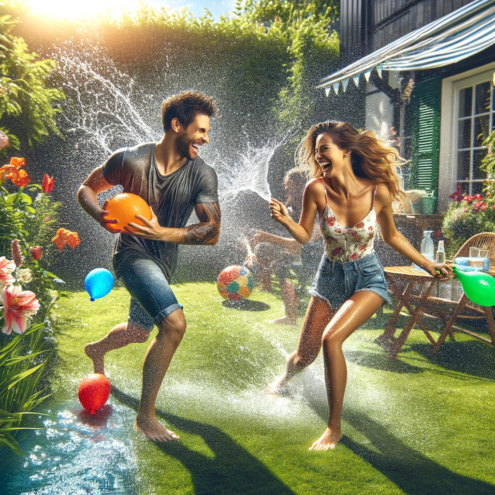

Engaging in shared activities and hobbies can strengthen the marital bond by
providing opportunities for couples to spend quality time together, learn new skills, and create
lasting memories. These shared experiences can enhance intimacy and understanding between partners
(Larson & Holman, 1994).
Top 5 Family Bonding Activities
Family Game Night: Engage in laughter, strategy, and teamwork with a variety of board games for a fun indoor activity.
Cook or Bake Together: Foster cooperation and creativity by preparing meals or treats together, teaching valuable life skills along the way.
Get Outside: Enjoy the great outdoors through activities like hiking, picnics, or beach days for fresh air and exercise.
Volunteer Together: Strengthen family bonds while contributing to the community, instilling values of empathy and generosity.
Create Family Traditions: Establish unique traditions to build a strong sense of identity and continuity within the family.
Communication:
Open and effective communication is essential in planning and enjoying
recreational activities together. Discussing interests, preferences, and expectations
ensures that both partners feel heard and valued, contributing to a more fulfilling
recreational experience (Gottman & Silver, 1999).
Advantages of Communication in Recreational Activities
Deepened Understanding: Through open dialogue about preferences and interests, partners can gain deeper insights into each other's personalities, likes, and dislikes. This understanding can lead to more empathetic interactions and a stronger emotional connection, as each partner learns to appreciate the other's perspective and unique qualities.
Enhanced Intimacy: Sharing thoughts, feelings, and experiences during recreational activities can enhance emotional intimacy. When couples communicate effectively, they create opportunities for meaningful exchanges and shared vulnerabilities, fostering a closer bond and a stronger sense of partnership.
Better Decision Making: Effective communication aids in making informed decisions about which activities to pursue. When both partners have a say and their opinions are considered, the decisions made are more likely to reflect the couple's collective desires, leading to more enjoyable and satisfying experiences.
Flexibility and Compromise:
Being flexible and willing to compromise is important
when choosing recreational activities. This may involve alternating between each
partner's interests or finding new activities that both enjoy. Flexibility demonstrates
respect and consideration for each other's preferences (Markman, Stanley, & Blumberg, 2010).
Top 3 Recreational Activities for Couples
Joint Adventure Day: One partner selects an outdoor activity like kayaking, while the other picks an evening activity such as attending a concert. This combination ensures a day filled with shared adventures and new experiences.
Cultural and Culinary Exploration: Spend the day exploring art galleries or museums, followed by a cooking class or dining at a specialty restaurant. It's a perfect blend of artistic inspiration and culinary delight.
Active and Zen: Kick off the day with an energetic activity like biking, then unwind with a peaceful yoga session or meditation. This balance caters to both the need for excitement and the desire for tranquility.
Prioritizing Recreation:
In the midst of busy schedules and responsibilities, it's crucial for
couples to prioritize recreational time together. Regularly scheduling date nights or weekend
getaways can help maintain the importance of recreational bonding in the relationship
(Schaap, 2008).
Advantages of Prioritizing time for Couples
Creating Lasting Memories:
The experiences shared during recreational activities become cherished memories that couples can reflect on, strengthening the bond and providing a sense of shared history over time.
Balancing Responsibilities with Pleasure:
By prioritizing recreation, couples demonstrate a commitment to balancing life's responsibilities with the need for enjoyment and pleasure. This balance is essential for a healthy, fulfilling relationship.
Increased Happiness and Satisfaction:
Regularly engaging in enjoyable activities together is linked to increased happiness and relationship satisfaction. Shared joy and laughter can elevate mood and reinforce the relationship's positive aspects.
Positive Attitude:
Approaching recreational activities with a positive and enthusiastic
attitude can greatly enhance the bonding experience. Emphasizing fun, laughter, and
enjoyment can help alleviate stress and deepen the marital connection (Gottman, 1999).
Advantages of Positive Attitude in Family
Promotes Enjoyment and Togetherness:
A positive attitude infuses a sense of enjoyment into family activities. When family members approach these activities with enthusiasm, they are more likely to actively participate and share in the joy of the moment. This collective enjoyment enhances the sense of togetherness and camaraderie within the family.
Strengthens Emotional Bonds:
A positive attitude fosters emotional connections among family members. Expressing excitement and positivity during recreational activities can create shared emotional experiences that strengthen the bonds between spouses, parents and children, and between siblings. These emotional connections are vital for building a sense of security and belonging within the family.
Enhances Communication:
Positivity encourages open and effective communication within the family. When family members are in a positive frame of mind, they are more likely to communicate their thoughts, feelings, and needs in a constructive manner. This improved communication can lead to better understanding and conflict resolution.
Reduces Stress and Tension:
Family life often involves various stressors and responsibilities. Engaging in recreational activities with a positive attitude offers a welcome break from daily stressors. It allows family members to relax, unwind, and recharge, leading to reduced tension and a more harmonious family atmosphere.
Models Healthy Behavior:
Parents play a crucial role in modeling behavior for their children. Demonstrating a positive attitude during family activities teaches children the value of optimism, resilience, and a constructive outlook on life. These attributes can serve them well as they navigate their own challenges and relationships in the future.
Creates Positive Memories:
A positive attitude can turn ordinary moments into cherished memories. When families approach activities with positivity, the experiences become memorable and heartwarming. These positive memories contribute to a family's shared history and serve as a source of nostalgia and connection in the years to come.
Strengthens Marital Bond:
Within a marriage, approaching recreational activities with positivity can reignite the spark between spouses. It reminds couples of the joy they find in each other's company and reinforces their emotional connection.

Creating Traditions:
Establishing traditions around recreational activities, such as
annual vacations or weekly game nights, can provide a sense of stability and anticipation
for couples. These traditions become cherished parts of the relationship's history (Doherty, 1997).
Creating Tradition activity
Seasonal Decorations:
Decorate your home together for different seasons and holidays. Whether it's putting up festive lights for the holidays or decorating your front porch for each season, it's a creative way to bond and express your personalities.
Renewal of Vows:
Plan a regular "renewal of vows" ceremony where you reaffirm your love and commitment to each other. It doesn't have to be as elaborate as a wedding, but it can be a heartfelt and intimate celebration of your relationship.
Charity Volunteering:
Make a tradition of giving back to the community together. Choose a charity or cause you both care about and volunteer your time regularly. It's a wonderful way to strengthen your bond while making a positive impact on others.
Balancing Individual and Joint Recreation:
While shared activities are important, it's
also essential for each partner to have individual recreational pursuits. Supporting
each other's individual interests can lead to personal growth and mutual respect within
the marriage (Snell, 1998).
Advantages of Balancing Individual and Joint Recreation
Reduced Pressure and Expectations:
When partners solely rely on each other for all their recreational needs, it can create undue pressure and expectations. Balancing individual and joint recreation reduces this pressure, allowing each partner to enjoy activities without the burden of constantly fulfilling the other's recreational desires.
Embracing Differences:
Every individual has unique interests and passions. Balancing individual and joint recreation allows partners to embrace and celebrate these differences. It's an opportunity to appreciate the diversity of interests and perspectives within the marriage.
Overcoming Challenges:
Couples may face challenges such as differing interests, financial
constraints, or lack of time. Addressing these challenges together and finding creative
solutions can strengthen problem-solving skills and resilience in the relationship
(Halford, Markman, & Stanley, 2008).
Advantages of Overcoming Challanges in Family
Financial Constraints:
Financial challenges can place strain on a relationship. These challenges might include budget constraints, differing spending habits, or unexpected financial burdens. Working together to create a financial plan, set priorities, and make informed decisions can help couples navigate these challenges while fostering financial responsibility and teamwork.
Lack of Time:
Busy schedules, work commitments, and family responsibilities can lead to a scarcity of quality time spent together. This lack of time for shared activities can affect emotional closeness. To address this, couples can schedule and prioritize time for each other, even if it's just a few minutes a day. Effective time management and communication are key to managing this challenge.
Problem-Solving and Resilience:
When couples actively address these challenges together, it provides an opportunity to develop problem-solving skills and resilience. By collaboratively seeking solutions, couples can strengthen their ability to handle difficulties as a team. This not only benefits the specific issue at hand but also builds a foundation for addressing future challenges.